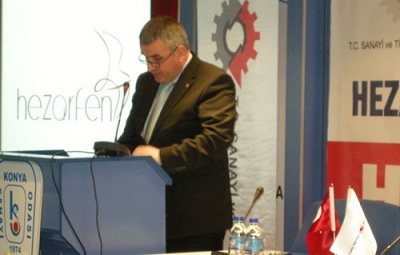
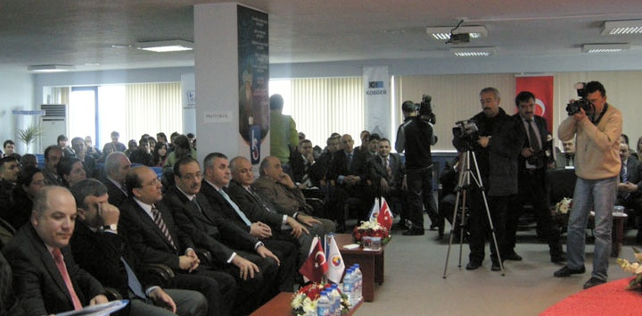

|
Prof. Dr. Asan, yaptýðý açýklamada, Türkiye'de patent, marka ve tasarým baþvurularýnda, kýsacasý sýnai mülkiyet baþvurularýnda son dönemde dünya ortalamasýnýn çok üzerinde artýþlar yaþandýðýný belirtti.
Küreselleþen ve rekabetin boyut deðiþtirdiði dünyada, "yeni ekonomi", "giriþimcilik", "entelektüel sermaye", "yenilikçilik", "Ar-Ge", "markalaþma", "tasarým" ve "inovasyon" gibi kavramlarýn baþarýnýn anahtarlarý haline geldiðini ifade eden Asan, "Ýþte bu nedenle, tüm dünyada bu konulara büyük önem verilmektedir. Ýnovasyon sürecinde, yani yeni bilgi ve teknolojilerin üretilmesinde, patent, marka ve endüstriyel tasarýmdan oluþan sýnai mülkiyet haklarý belki de en önemli araçtýr" dedi.
Asan, firmalarýn küresel bir boyut kazanan bu rekabet ortamýnda ancak ekonomik ve teknolojik deðeri yüksek patentlere, özgün tasarýmlara ve güçlü markalara sahip olmakla baþarý saðlayabileceklerini belirterek, þunlarý kaydetti:
"Ýþte bu nedenle, baþarýlý olmak isteyen, baþta KOBÝ'ler olmak üzere tüm firmalarýmýzda tüm yöneticiler, sýnai mülkiyet haklarýnýn ne olduðu ve nasýl daha etkin kullanýlabileceði hususunda bilinç ve bilgi düzeyine sahip olmalý. Bu hususlara dikkat eden firmalarýmýz için sýnai mülkiyet haklarý tehdit olmayýp, bilakis fýrsatlar sunmaktadýr. Türkiye'de de son yýllarda bu konuda önemli geliþmeler yaþanmakta ve aþamalar kaydedilmektedir. Marka baþvuru sayýsýnda Almanya ve Fransa'nýn ardýndan Avrupa'da üçüncü sýrada yer aldýk. Benzer geliþmeler tasarým baþvurularýnda da yaþandý, yýlda 6 bin baþvuru ve 30 bin tasarýmla Türkiye Avrupa'da üçüncü ülke konumuna geldi."
"Bugün burada baþlattýðýmýz bu proje, son dönemde ülkemizde sýnai mülkiyet baþvurularýnda
yaþanan önemli artýþlarýn sürdürülebilir olmasý açýsýndan da önem taþýmaktadýr. Konya'da
faaliyet gösteren KOBÝ'ler baþta olmak üzere ülkemizde tüm KOBÝ'lerin bu hedefe ulaþmada
önemli katkýlarý olacaðýna inanýyoruz. Çünkü, Konya sýnai mülkiyet haklarýna önem veren bir
ilimizdir. Geçtiðimiz yýl 81 ilimiz arasýnda Konya, patent ve faydalý model baþvurularýnda 5.,
marka ve tasarým baþvurularýnda 7. sýrada yer almýþtýr. Konya'nýn bu konuma ulaþmasýnda
katkýsý bulunan bir baþka ifade ile 1995-2008 yýllarý arasýnda en çok patent alan, marka ve
tasarým tescili yaptýran firmalara birazdan teþekkür belgesi ve plaket vereceðiz."

Baþvurular 10 bini aþtý
Son dönemde patent baþvurularýnda da sevindirici geliþmelerin yaþandýðýný anlatan Asan, dünyada patent baþvurularýndaki yýllýk artýþ oraný yüzde 5'in altýnda iken, hatta pek çok ülkede azalma yaþanýrken, ülkemizdeki yerli patent baþvurularýndaki artýþ oranýnýn, 2007 yýlýnda yüzde 70, geçtiðimiz yýl ise yüzde 23 olmasýnýn bir baþarý hikayesi olarak deðerlendirilebileceðini bildirdi.
Asan, bu artýþta, TÜBÝTAK ile yürütülen Patent Teþvikleri'nin büyük etkisi olduðunu dile getirerek, "Ülkemizde faydalý model baþvurularý ile birlikte deðerlendirildiðinde, Türk Patent Enstitüsüne yapýlan patent ve faydalý model baþvuru sayýsý, yarýsýndan fazlasý yerli olmak üzere Cumhuriyet tarihimizde ilk kez 10 bini aþmýþtýr" diye konuþtu.
Yerli patent baþvurularýnda artýþ
2008 yýlýnda 10 bin 123 buluþ için patent ve faydalý model baþvurusu yapýldýðýný kaydeden TPE Yönetim Kurulu Baþkaný Prof. Dr. Asan, þöyle devam etti:
"1995 yýlýnda toplam bin 730 baþvuru yapýldýðý dikkate alýndýðýnda, gelinen noktanýn önemi daha iyi anlaþýlacaktýr. Daha da önemli ve sevindirici olan ise yerli baþvuru sayýsýnýn artmasý. 1995 yýlýnda 208 olan yerli marka baþvuru sayýsýnýn, toplam baþvurular içindeki oraný yüzde 12 olarak gerçekleþmiþti. Geçtiðimiz yýl ise yerli marka baþvuru sayýsý 25 kat artarak 5 bin 217'ye ulaþtý. Toplam baþvurulardaki oran ise yüzde 52'ye çýktý. Yine 2009'un ocak ayý için bir deðerlendirme yapacak olursak yerli patent baþvurularýndaki artýþ oraný yüzde 14 olarak gerçekleþirken, toplam baþvurulardaki artýþ oraný yüzde 10 oldu. Baþvuru sayýlarýnda yaþanan bu geliþme, ülkemizdeki mevcut potansiyelin harekete geçtiðinin bir göstergesidir."
En çok baþvuru Ýstanbul'dan
Asan, uluslararasý patent baþvurularý açýsýndan deðerlendirildiðinde henüz 2008 yýlý verileri kesinleþmemekle birlikte 2002-2007 döneminde ülkemizde yapýlan patent baþvurularýnda yüzde 318'lik bir artýþ gerçekleþtiðini bildirdi.
Patent baþvurularý açýsýndan 2008 yýlýnda en çok baþvurunun Ýstanbul'dan yapýldýðýný anlatan Asan, "Ýstanbul'u, sýrasýyla Ankara ve Ýzmir takip ediyor. Faydalý model baþvurularýnda da Ýstanbul ilk sýrada yer alýyor. 2008 yýlýnda en çok yerli patent baþvurusu yapan firma ise Arçelik oldu. Arçelik'in ardýndan sýrasýyla Ford Otomotiv Sanayi ve BSH Ev Aletleri geliyor" diye konuþtu.
|